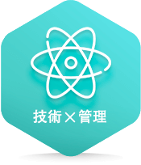

玉山TMA計畫三大特色
區塊鏈被喻為網際網路2.0、平台革命成為工業革命後的新顯學，種種現象讓金融科技被視為是影響人類生活最重要的趨勢。為了透過數位金融讓人們的生活更美好，玉山運用雲端、行動、大數據、區塊鏈、人工智慧、物聯網等科技大幅提升金融服務的顧客體驗。玉山首創TMA計畫，招募理工科技人才，培育打造具有雙重經驗、雙重專業、雙重視野的FinTech數位人才！
-
培育世界級的金融科技專家
除了結構化逐步建立各項資訊技術必備能力，更與SAS、微軟、IBM等國際知名資訊顧問合作，打造一流的FinTech專家團隊，培育造就資料科學家、數位金融研究及新技術研發等科技人才。
-

資訊技術加上管理能力的雙軌發展
以資訊專業技術為基礎，搭配專案管理相關能力培育，造就在「技術專才」及「管理人才」雙軌職涯發展的穩固基礎。
-
開拓更寬廣的企業經營視野
參與各項重要金融創新專案，如資訊科技策略報告、創新提案競賽、大型資訊顧問案…等，深入了解資訊科技如何與業務運作完美搭配，培養自己用更宏觀角度看技術的視野。
培育流程
-
3.5 months 基礎訓練模組
瞭解玉山策略發展重點，體驗玉山文化並認識金融業務架構，結合資訊基礎程式訓練。
-
5 months 技術養成模組
安排Mentor進行技術領域學習與指導，針對技術領域及業務範疇進行扎根培育，建立FinTech專業。
-
9 months 專案管理模組
除技術元素外，將加入專案管理培育，參加大型專案實作，提早為未來管理職涯佈局。
甄選流程
數位金融需要不斷地實驗，將創新的想法藉由程式語言轉化為具體、可實踐的解決方案，只要你對金融科技有熱情、有想法，歡迎與我們一同打造科技的玉山，參與台灣金融新里程。
還在等什麼呢？趕快填寫玉山線上履歷、完成報名，我們履歷隨到隨審，請耐心等待喔~
由高階主管親自說明玉山的 FinTech 發展及佈局，讓同學瞭解第一手數位金融發展，並藉由主題式面談交流進行雙向互動，讓同學更瞭解玉山。
由各領域專業主管進行技術交流，可由互動中瞭解目前 FinTech 技術發展，並將請學長姊進行會後交流，分享玉山生活中的大小事。
與經營團隊近距離接觸，瞭解我們的經營理念、玉山對於 TMA 的重視與期待、以及自己未來成長發展的舞台。
歡迎你加入我們！我們將完整說明 TMA 的薪資福利、培育規畫及中長期職涯發展，也會帶你參觀我們快樂的工作環境。
應徵資格
- 1、國內外一流理工相關研究所畢業，對新科技技術、程式開發、大數據分析有興趣。
- 2、對金融科技充滿熱情，喜歡團隊合作，有強烈的責任感，想挑戰自我極限。
- 3、擁有問題分析解決能力，高度抗壓性，願意接受跨領域的培育與輪習。
- 分享到